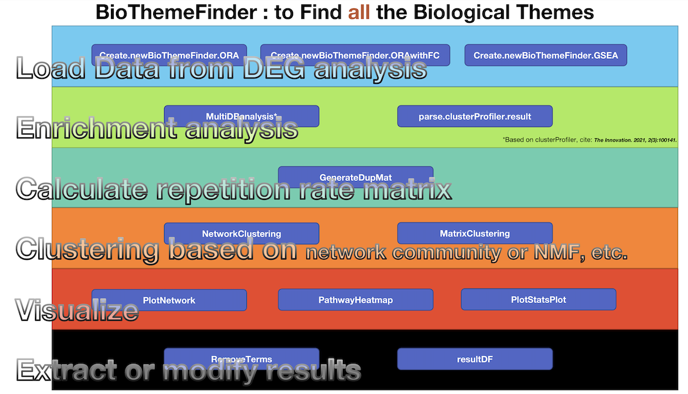

BioThemeFinder
“clusterProfiler”的扩展包。BioThemeFinder为多数据库联合（如GO、KEGG、Reactome和自定义基因集等）提供了一种富集分析方法。此外，可以使用NMF或基于网络的社区聚类等方法将冗余富集结果转化为更具解释性的生物故事。
Description

Installation
library(devtools)
install_github("ZhimingYe/BioThemeFinder")Demo
载入R包
library(BioThemeFinder)
library(clusterProfiler)
library(ReactomePA)
library(org.Hs.eg.db)
library(org.Mm.eg.db)这里的Gene名字和差异表达数值均为vector。差异表达数值可以来自DEG分析的log2FC，也可以来自ROC的power等（例如Seurat）。 LUAD_DEG为TCGA肺腺癌差异基因数据。为本包自带示例数据。
创建BioThemeFinder对象
Create.newBioThemeFinder.ORA只有Gene名，使用过表达分析（ORA）进行分析Create.newBioThemeFinder.ORAwithFC具有Gene名、衡量基因表达差异的数值情况，使用过表达分析（ORA）进行分析Create.newBioThemeFinder.GSEA具有Gene名、衡量基因表达差异的数值情况，使用GSEA进行分析
这里我们用以第二个情况作为demo。
Species为物种，支持人和小鼠（mouse），FromType为纳入的基因ID类型，可以是ENSEMBL, ENTREZID, SYMBOL等。
可以使用?在每个函数前面看具体的帮助文档。
data("LUAD_DEG")
BTFdemo<-Create.newBioThemeFinder.ORAwithFC(Gene = rownames(LUAD_DEG),log2FC = LUAD_DEG$log2FoldChange,Pvalue =LUAD_DEG$padj,FCcutoff = 1,PvalueCutOff = 0.05,Species = "human", FromType="ENSEMBL")进行多数据库富集分析
DBlist可以是GO, KEGG, Reactome, SelfDefinedGS。
当纳入自定义数据库（SelfDefinedGS）的时候，需要用Term2GENE传入自定义基因集。
具体帮助使用?MultiDBanalysis查看。
另外还可以使用parse.clusterProfiler.result直接从clusterProfiler导入结果对象。
BTFdemo<-MultiDBanalysis(BTFdemo,PVal = 0.05,QVal = 0.05,DBlist = c("GO","KEGG","Reactome"),nGeneCutOff = 5,simplify_cutoff = 0.7,useMKEGG = T)预览富集结果
PathwayStatsPlot(BTFdemo,orderBy = "pValue")计算Term之间纳入的基因重复度
可以传入EdgeCutoff参数，决定重复度大于多少的两个富集分析到的通路才被纳入绘制网络。默认为0.5。
BTFdemo<-GenerateDupMat(BTFdemo)可以使用PathwayHeatmap(BTFdemo)预览之。注意该图片对于R预览可能过大。请导出成50x50英寸左右的PDF，在PDF浏览器中查看。
PathwayHeatmap(BTFdemo)基于网络聚类
BTFdemo<-NetworkClustering(BTFdemo)网络聚类可视化
PlotNetwork(BTFdemo,method = "igraph",Label = T)
PlotNetwork(BTFdemo,method = "igraph",Label = F)
PlotNetwork(BTFdemo,method = "ggplot2",Label = T)基于矩阵的聚类
可以使用的聚类工具有”nmf”,“hc”,“pam”,“fuzzy”。可以通过method传入。nmf为非负矩阵分解方法，hc为层次聚类方法，pam为围绕中心点的划分（Partitioning Around Medoid）方法，fuzzy为模糊聚类（Fuzzy Clustering）。具体的帮助请?MatrixClustering。
k可以通过概览PathwayHeatmap大致确定。
BTFdemo<-MatrixClustering(BTFdemo,k=20,method="nmf")基于热图的可视化
clusterType可以为”MatrixResult”, “NetworkResult”之一。后文同
PathwayHeatmap(BTFdemo,using_cluster=T,clusterType="NetworkResult")分面的点图
具体帮助可以使用?PathwayStatsPlot查看。加入+ facet_grid(~Cluster)进行分面。
可以看到，每个模块的功能十分清晰，同时很好的利用了多数据库。
PathwayStatsPlot(BTFdemo,orderBy = "pValue",clusterType="NetworkResult")+ facet_grid(~Cluster)
PathwayStatsPlot(BTFdemo,orderBy = "pValue",clusterType="NetworkResult")+ facet_grid(~Cluster)提取结果
Genes<-ExtractGenes(BTFdemo,clusterType="NetworkResult")
Result<-resultDF(BTFdemo)